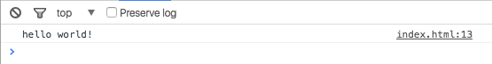

JavaScript 1
Introduction to Programming for the Web

Written, designed, and produced by:
Software Training for Students
About Software Training for Students
Software Training for Students is an organization on campus that provides free software training to all students and faculty. Our services include custom workshops, open-enrollment classes, one-on-one project help, and access to Lynda.com. For more information on the Software Training for Students (STS) program, visit our website at wisc.edu/sts.

STS is part of the Division of Information Technology (DoIT) - Academic Technology at UW-Madison. For more information regarding DoIT Academic Technology, visit at.doit.wisc.edu.
Introduction
About this Class
JavaScript is used as a client-side scripting language on many of today's most popular web sites. It may also be used as a server side programming language using a framework like Node.js. JavaScript extends the basic functionality of HTML and CSS to provide interactive features on a web page. In this class, you will learn the basics of JavaScript by completing some small projects.
Topics
This workshop will cover the following topics:
-
Intro to JavaScript
-
Uses of JavaScript
-
Integrating JavaScipt into HTML
-
JavaScript Basics
-
Basic Programming Elements (objects, variables, functions, loops)
-
Using Event Listeners in JavaScript
Required Skills
Since JavaScript is used in conjunction with HTML and CSS, this class requires moderate experience with HTML and basic experience with CSS. If you have taken the HTML 1 and CSS 1 classes offered by Software Training for Students, you should meet these requirements.
Also, familiarity with a programming language or scripting in general is helpful, but not required for this course. JavaScript uses many of the same control structures as other programming languages (PHP, Java, C, C++, etc.) and scripting languages (BASH, etc.), but this will not be a focus of this class.
Required Software
We recommend that you use Google Chrome as a web browser, because it has a proper JavaScript console that we can run JavaScript statements in. Other browsers have similar developer tools, but for this class we will use Chrome.
You will also need a text editor to create JavaScript files, and view the HTML and CSS behind our web site. Example text editors for Mac are Sublime Text 2, TextWrangler, or the default text editor, TextEdit. Example text editors for Windows are SciTE, Notepad++, or the default text editor, Notepad. If you can, use a text editor that has syntax highlighting. It will highlight your code for you, and can make fixing errors a lot easier.
Pre-made files will be given to you, but if you are working on your own, feel free to navigate to the STS website to download the most recent class files.
Accessibility
When designing web pages, it is crucial to make pages accessible; that is, viewable by the broadest audience possible. The University of Wisconsin has enacted a web accessibility policy that provides guidelines on how web pages should be written so all users can access them.
The standard being used is the US Federal Government Standard Section 508. This standard provides a set of rules that, when followed, allow all users to access a web page. The rules are not difficult or intrusive, and obeying them from the start is the easiest way to make accessible pages.
This policy applies to all University programs and web pages posted on University servers. If you are writing pages for any University site, they must meet this standard. Even if you aren't required to meet this standard, you might want to consider it practice and can help to broaden your audience.
Intro to JavaScript
Today, we will be using JavaScript as a client-side scripting language to provide more interactive features on a web page. Client-side means that the JavaScript commands are run by the web browser on the user's (client's) computer. This differs from server-side scripting languages (such as PHP), in which the commands are executed by the web server before the web pages are transferred to the user. Although JavaScript can be used as a server-side programming language, we will only be using it as a client-side scripting language in this class.
Client-Side Scripting
Because JavaScript is a client-side scripting language, the code to be processed is run on the user's (client's) computer. This means that it is impossible to "hide" or protect JavaScript code, as it must be readable by the user's computer to run (just as it is impossible to hide HTML or CSS). By running code locally, it can be much faster to respond to user input, for example in form validation, mouse movement, or graphical effects.
JavaScript also has limited rights, including restricting the modification of local files. In practical JavaScript use, you will be limited to modifying the appearance of the current web page only. Any more complex interactions with a computer file system will likely require server-side programming languages, such as PHP.
Even with its limited rights, there are still several security risks involving JavaScript, most of which related to out-of-date web browsers. To completely protect a computer from malicious attacks, it is often recommended to disable JavaScript. This adds a new level of complexity for web design - web pages should only JavaScript only for extra features. For this reason, we must obey the following guideline:
Your web page should be fully usable even if JavaScript is disabled to be completely accessible.
For this reason, it is often imperative to use JavaScript in conjunction with a server-side programming languages for form validation and good web authoring practices in all other cases.
Uses of JavaScript
JavaScript is a prevalent part of current web design practices. Many features of web pages that change based on user input are the result of JavaScript code. Here are a few examples:
Lightbox
The original lightbox script (http://lokeshdhakar.com/projects/lightbox2/) displays images in an interactive way, giving the effect of the image floating above the page. Try navigating to the link above, and scrolling down to the "Examples" section. Click on an image in this section to view it.

Parallax
You can use JavaScript to make scrolling through a web page a unique experience. Parallax scrolling is the idea of having the content of your web page scroll faster, or slower, than other elements on your page. Dave Gamache has a nice web page that uses parallax (http://davegamache.com/parallax/).
Full Screen Forms
JavaScript can be used to make filling out forms a simple experience on your web page, by using full screen HTML forms. Full screen forms are used in a demo shown below. (https://tympanus.net/codrops/2014/07/30/fullscreen-form-interface/).
Although we will only reach the very basics of these effects in this class, check out the JavaScript 2 class for more practical examples of these JavaScript effects and more.
JavaScript Basics
Console Logging
The "Hello World" program is usually the first program someone writes when learning a new programming language. Essentially, it is a way to learn how to print something to the screen in that particular language. In JavaScript, there's more than one way to do this. The first and the easiest way is printing to the cosole.
Logging to the console
-
Open the class file folder named "Basics" inside of the "JS1_ClassFiles" folder.
-
Open the "index.html" file in a browser window. It should just be a blank HTML page with the text "Welcome to JavaScript1 with STS!"
-
Now open the console in the browser. If you are on a Mac, Use the shortcut: command-option-J. If you are on Windows, Use the shortcut: control-shift-J. Alternatively, you can Navigate to View > Developer > JavaScript Console.
-
The console should currently be empty. To print something to the console, open the "basic.js" file in the "Basics" folder by right clicking on the file and opening in the text editor of your choice.
-
Write the following code in the file:
console.log("hello world!");The console.log() method takes a string-type or number-type argument (between the parentheses) and writes it to the console. You can either use single quotation marks (') or double quotation marks (") to specify a string of text. Whatever you use, just be sure to stay consistent. If you are writing a number to the console, do not use quotation marks.
-
Save the file "basic.js" and refresh the index.html file that you have open in your browser.
-
You should now see hello world printed to the console. Next, we will use the console to run some simple JavaScript commands.

Writing JavaScript to the Console
We can use the JavaScript console in Google Chrome to write and execute JavaScript statements "on the fly". Next, we will learn about some simple statements we can execute in JavaScript. Using the console to practice these statements is recommended, because it eliminates the issues you might run into saving and refreshing an internal script in your HTML code.
Writing Strings to the Web Page
-
If the JavaScript console is not open, Open it now. Remember, Use the keyboard shortcut: command-option-J if you are on a Mac, or control-shift-J if you are on Windows.
-
Type the following into your JavaScript console.
document.write("I just wrote to the web page!"); -
Hit Enter to execute the JavaScript statement.
You should see the String written to your web page. You can also write numbers to the page, if you leave out the quotation marks. This statement will erase any HTML that used to be on the web page. This is perfectly normal. Leave the JavaScript console open, and do not refresh your web page for the next exercise.
Writing HTML Code to the Web Page
-
Insert your cursor into the console, if it is not already there.
-
Press the Up Arrow key to access previously typed statements.
The Down Arrow can be used also, in order to navigate through the console history.
-
Using the arrow keys, Find the statement we typed in the previous exercise. Do Not press enter yet.
document.write("I just wrote to the web page!"); -
Insert HTML h2 tags into the statement.
document.write("<h2>I just wrote to the web page!</h2>"); -
Press Enter to execute the statement.
Writing HTML code to the page is a more practical example of how you might write formatted text to the HTML document.
Displaying a Pop-Up Alert
-
Open the JavaScript console, if it is not already open.
-
Type the following into your console.
alert("Coding is awesome!"); -
Hit Enter.
You should see a pop up window that displays the String argument typed above. It should look something like the image below.
Basic Math
-
Open the JavaScript console, if it is not already open.
We can do some basic mathematical operations in the JavaScript console using some standard mathematical operators shown below. If you have had experience with other programming languages, these operators might be familiar.
-
Addition: +
-
Subtraction: -
-
Multiplication: *
-
Division: /
-
Modulus (Remainder): %
-
Grouping Parentheses: ( )
-
-
Type the following into your console.
(48%13)/2 -
Hit Enter.
You should get a result of 4.5 because 48%13 = 9 and 9/2 = 4.5
Variables
Declaration
A variable can be thought of as a box that contains some sort of information. For example, you could look inside the box and see what's inside, or you could change what is stored in the box. In JavaScript, you should think of a variable as a box that holds a value. If you decide to store something into a variable, this process is called "assigning" a variable. It would be similar to storing something into an empty box. If you have the name of a variable, you can easily read the value stored in that variable by simply using the name wherever you need the value.
In JavaScript we can declare variables using the following syntax,
let variableName;where "let" is a special keyword that denotes a variable, and "variableName" is whatever you choose to name the variable. There are some restrictions as to what you can name your variables. Good reference for this information and reference for JavaScript in general can be found on the Mozilla Developer Network, or MDN (https://developer.mozilla.org).
If you would like to store a value into the variable, you can do so on the same line by using the following syntax,
let variableName = some value here;where "some value here" could be a string, number, or object.
You can declare and assign variables on separate lines as well. Use the following syntax.
let variableName;
variableName = some value here;This syntax works in the same way as the single line declaration and assignment seen above.
Keep in mind that in JavaScript, variables are case-sensitive. This means variables named "message", "Message", and "MESSAGE" could all represent different things. Also, since JavaScript is a loosely-typed language, variables can be assigned any type of data with one general statement.
Data Types
Variables can store all sorts of information like numbers, text, or a collection of different values. Every variable has an associated "data type" based on the kind of information that is stored inside the variable. In JavaScipt, there are eight basic data types, but today we will only be looking at the two most commonly used ones: Numbers and Strings.
Numbers
The Number data type in JavaScript is used to store integers and decimal numbers. Variables with this data type can also be used to carry out math operations.
let num1 = 15;
let num2 = num1 / 3.7;Strings
The String data type in JavaScript is used to store text, which can be a combination of letters, numbers and special characters. All strings need to be enclosed in single or double quotes.
let city = "Madison";
let name = 'Jeff';Functions
Functions
Functions in JavaScript are used to reduce redundancy in your code. It is a good idea to follow the DRY (don't repeat yourself) programming principle when writing JavaScript. This means that any duplicated JavaScript code should probably be put into a function. Wherever you use that code, you may call that function.
A common way to create a function in JavaScript can be done using the following syntax.
function myFunctionName(){
// repeatable code goes here!
}If you want to call the function we declared above, use the following syntax.
myFunctionName();Call the function wherever you need to repeat the code that is inside of the function declaration.
There is another way to declare functions in JavaScript using the following syntax. However, in the exercises in this class, we will only use the declaration shown before for our functions.
var myFunctionName = function(){
// repeatable code goes here!
};Declaring a function like this has some minor changes that we won't go into, but they are called in functionally identical ways.
"function" is a keyword in JavaScript and always has to be used when declaring a function. You may add arguments to the function declaration between the parenthesis, and you may also return values from the function. Below is an example function declaration and function call that takes two numbers, adds them together, and stores them in a variable named "result".
function addNumbers(num1, num2){
return num1+num2;
}
let result = addNumbers(4,5);In this example, "result" should hold the integer 9.
Mini Project 1
We are going to apply some of the concepts we have learnt and try to debug a file that is given to us. Debugging is the process of finding errors and fixing them, and is common in most programming languages. For now, we are going to use the console.log() method to debug.
Viewing the JavaScript Code
-
Open the "JS1_ClassFiles" folder.
-
Open the "Debugging" folder.
-
Right-Click "debug.js" and Open With a text editor of your choice.
There are some functions that are defined already in the Javascript file, but for now you don't need to know how those work. We will be learning how functions work after this project. For this project we only to focus on the variables.
Step 1: Check if the webpage is working
Next, we will check if the webpage is working or not. This basic webpage takes in two numbers as input and prints out the sum of those numbers. We will see if the button works or not.
External Scripting and Linking
-
Close "debug.js", if you still have it open.
-
Open the "JS1_ClassFiles" folder.
-
Open the "Debugging" folder.
-
Open "index.html" in Google Chrome
-
Input any two numbers and click on the button to see if it works.
The button doesn't work! This is because we did not link our "index.html" file with our "debug.js" file. Let's do that now.
-
Navigate back to your file window.
-
Open "index.html" in a text editor of your choice.
-
Scroll Down towards the bottom of the HTML document. There should be an area that says:
<!-- external JavaScript link goes here -->This is the syntax for an HTML comment. HTML comments are useful to mark important areas in your HTML document, and are not executed by the browser.
-
Type the following directly below the comment.
<script type="text/javascript" src="debug.js"></script>This is called external linking, and it allows us to write JavaScript code in a separate file (saved with a .js extension). We can then execute JavaScript anywhere in our HTML file by linking to the external JavaScript file.
-
Save the "index.html" file, and Open it in Google Chrome.
You might notice that although the button works now, it doesn't print the correct output. There are some errors in our JavaScript file! Let's check out the JavaScript file and try to debug the errors using the console.
Step 2: Debug the errors
Next we will try to understand why the webpage prints out the wrong answer. We will try different inputs and look at the outputs to make an educated guess, and then confirm that by using the console.
Finding the error
-
First we will try to understand why the webpage prints out the wrong answer. Enter different inputs into the text boxes and look at the outputs, and then try to guess what might be wrong with the code.
Hint: Try to enter text into the boxes instead of numbers and look at the output.
-
You might have figured out by now what the error is. The JavaScipt code is treating the numbers as text or "strings", and adding those strings together (also known as concatenation) and printing the result. We will use the console to confirm if this is the error.
-
To confirm if the error is JavaScipt treating the numbers as strings, we will print out the data type of the variables that store the numbers to the console. To do that, we will use the "typeof" operator. Open the "debug.js" file and go to line number 20. Then create a new line after that to write the following code.
Do the same for "num2" and "sum".console.log(typeof num1) -
Save the "debug.js" file and refresh the "index.html" webpage. Now open the JavaScript console in your browser.
Remember, on a Mac, use command-option-J to open the JavaScript console. On Windows, use control-shift-J.
Enter any two numbers in the text boxes and press the button. You should now see the data type of the variable printed onto the console. The console prints out "string" for all three variables, which confirms that JavaScript is treating the numbers as strings.
Debugging
-
Now that we know what the error is, we can fix it by modifying the code so that JavaScript treats the numbers we input as integers. To do that, we will use the parseInt() function.
-
Open the "debug.js" file and go to line 20, where num1 and num2 are being added and the result is being stored in sum. Replace the line with the following code:
let sum = parseInt(num1) + parseInt(num2);What this does is convert num1 and num2 to integers before adding them, and the correct sum is then stored in the variable "sum".
-
Save the "debug.js" file and refresh the "index.html" webpage in your browser. Enter any two numbers in the text boxes and press the button. You should now see the correct sum printed on the screen!
Functions, Objects, and the DOM
Variable Scope
Variables in JavaScript have functional scoping. Scoping is a concept that describes where declared variables can be "seen". If you declare a variable at the top of a script file, it can be "seen" and used throughout the whole script. This is known as a "Gobal Variable". If you declare a variable within a function, it can only be seen and used within that function. This is known as a "local variable". This can be problematic sometimes because it is possible to accidentally write new values to existing variables.
Just be sure that whenever you declare a variable, you always use the "let" keyword. This will reduce errors in your code. Also, a good rule of thumb is to declare any variables that you will use throughout the whole script at the top of your JavaScript file, and declare any variables that you will use within certain functions at the top of the function declaration.
Objects
Objects in JavaScript represent something that has properties and methods. You can think of an object like a car. Properties of a car would be make, model, year, and more. Some methods that the car would have could be drive, play radio, lock doors, and more. We use objects in JavaScript and other languages. Some common objects in JavaScript are the Math object, Date object, and most importantly, the Window object. Documentation on these objects can be found on the Mozilla Developer Network, or MDN (https://developer.mozilla.org).
Document Object Model (DOM)
The DOM is a web Application Programming Interface (API) that allows access to and modification of the current HTML document being displayed. You can think of the DOM as a virtual representation of the entire web page, including the browser that the HTML is being viewed in.

The DOM contains the following objects.
-
Document: A representation of the HTML source that allows JavaScript to dynamically edit any aspect of a web page. The write() function that we used previously is a part of the document object (remember how we used document.write() to make things appear in the page?).
-
Window: A representation of the instance of the browser window. It can be used to move, re size, or otherwise affect the entire browser window. The alert() function is a part of the window object. The Document object is a property of the Window object and can be accessed by typing Window.document. It is usually shortened to just document, however.
-
Navigator: A representation of the specific browser program used to view the web page. It contains information like the browser's name, version, language, and other properties.
-
Screen: A representation of the computer's monitor. It contains information like the screen resolution and number of colors.
-
History: A representation of the browser's history. It can be used to command a browser to go forward or back through the list of visited web pages.
-
Location: A representation of the current web site URL or address. It can be used to redirect the browser to a new web site.
Mini Project 2
We are going to create a small, functional webpage to apply some of the concepts that we have learnt so far. To do that, we will make a Tip Calculator. It will be a simple webpage that will take the bill amount and tip percentage, and display the tip amount as an alert.
The Finished Product
A finished version of the Tip Calculator is given to you in the class files.
Viewing in the Browser
-
Close the previous window containing "index.html", if you have not done so already.
-
Open the "JS1_ClassFiles" folder.
-
Open the "Finished_Tip Calculator" folder.
Observe how the finished webpage is laid out, with an "index.html" page in the root folder, along with folders containing any JavaScript files and CSS files named "js" and "css", respectively.
-
Right-Click "index.html" and open with Google Chrome.
-
Click on the different buttons and input elements on the web page, and experiment to learn how it works.
Viewing the JavaScript Code
-
Open the "JS1_ClassFiles" folder.
-
Open the "Finished_Tip Calculator" folder.
-
Open the "js" folder containing the JavaScript file named "app.js".
-
Right-Click "app.js" and Open With a text editor of your choice.
Intro to Building the Webpage
Next, we will work on the incomplete webpage. There are a few steps that we will have to go through, but we can start out by linking our JavaScript file with our HTML page.
External Scripting and Linking
-
Close "app.js", if you still have it open.
-
Open the "JS1_ClassFiles" folder.
-
Open the "ToDo_Tip Calculator" folder.
-
Open "index.html" in Google Chrome
-
Try Clicking on the buttons on your web page.
None of the buttons are working! This is because we did not link our "index.html" file with our "app.js" file. Let's do that now.
-
Navigate back to your file window.
-
Open "index.html" in a text editor of your choice.
-
Scroll Down towards the bottom of the HTML document. There should be an area that says:
<!-- external JavaScript link goes here -->This is the syntax for an HTML comment. HTML comments are useful to mark important areas in your HTML document, and are not executed by the browser.
-
Type the following directly below the comment.
<script type="text/javascript" src="js/app.js"></script>This is another way of linking to a JavaScript file, called external linking. We can write JavaScript code in a separate file (saved with a .js extension), and then we can execute JavaScript anywhere in our HTML file by linking to the external JavaScript file. This is usually more readable than internal scripting that we saw earlier in the course.
-
Save the "index.html" file, and Open it in Google Chrome.
You might notice that the buttons don't work. That's because we haven't added the code to make those buttons do anything. Let's go back to the JavaScript file and fix that.
Linking HTML Elements to JavaScript
The DOM object has two types of methods we can use to link HTML elements to JavaScript. The first method is "getElementById". To get the HTML element using this method we need to pass in the "id" of the particular element that we want as an argument to the function. Here is an example of getElementById:
let incompleteTasksHolder = document.getElementById("incomplete-tasks");Here, we are getting the HTML element with id="incomplete-tasks", and storing it in the variable "incompleteTasksHolder" so that we can reference it later in the JavaScript file. The other DOM method that we can use to access HTML elements in JavaScript is "querySelector". The difference between getElementById and querySelector is the getElementById uses the element's id to retrieve it, while querySelector uses a CSS selector, which is useful for getting multiple elements of the same type. You can also get elements by their id using this method. Here is an example of querySelector:
let incompleteTasksHolder = document.querySelector('#incomplete-tasks');This is doing exactly the same thing as getElementById, the only difference here is the syntax. When using the querySelector method to get an element by id, the id has to be prefixed with a "#". For this webpage, we will be using both the methods.
Calculate Button Variable
The previous "Uncaught ReferenceError" you saw in the console can be fixed by a simple assignment of a variable.
-
Open the "js" folder.
-
Open "app.js" in the text editor of your choice.
-
In the window.onLoad function, right below the comment that says declare the variable for the calculate button, type the following code:
let calculateButton = document.getElementById("calculate"); -
Save the file "app.js".
-
Right-click "index.html" and Open With Google Chrome to view the changes.
-
Try and click the Calculate button on the webpage. You will now notice that we get another Uncaught ReferenceError, but this time the error message is different. We need to add some functionality to the calculateTip function to fix this error.
In the code you wrote above, we created a variable named calculateButton and stored the <button> element object into the variable. We used the DOM to access this HTML element, by getting the element from the document with the id of "calculate". Check out the HTML code for the web application, and you will see that the <button> element has an id="calculate".
Completing the calculateTip Function
We need to write the code for what happens when we click the "Calculate" button after entering the values. The function has also been declared and there is some skeleton code provided. We need to write code to get all the values from the text boxes and the drop-down list, calculate the tip and then print it to the webpage.
Declaring Variables
-
Scroll down to the "calculateTip" function. It should be right below the comment that says "complete this function"
-
Find the comment that says "assign values of variables".
-
Below the comment, declare variables to store the respective values in them using the "getElementById" method. The IDs for the HTML elements are in the comment. Use the same name for the variables as the ID of the HTML element, as those variables are later used in the code to calculate the tip. The first one is given as an example below:
let amount = document.getElementById("amount").value;Note the ".value" at the end of the statement. This is used to get the integer value, which is required to do integer arithmetic like basic math operations using the variables. Do the same for the other two HTML elements.
-
Save the file "app.js".
Conditional Statements
We would want to calculate the tip amount only if some value has been inputted for the Bill Amount and the type of service (tip percentage) has been selected from the drop-down list. If either of the two inputs are empty, and the user clicks the Calculate button, we would like to alert the user and tell them to input both values. This issue can be solved with conditional statements.
-
Inside of the calculateTip function, add an if-else statement just below the comment that says "add if else block here". Make your code look similar to the code below.
if (amount === "" || service === 'Select') {
alert("Please enter valid values");
}
else {
}If the user does not input both the required values, the code will enter the if statement. It will then show an alert asking the user to input valid values. If the input is valid the code will enter the else statement. We'll add code the else statement to calculate the tip amout and display it next. This is called control flow in programming. Documentation on control flow can be found on the Mozilla Developer Network, or MDN (https://developer.mozilla.org).
-
Save the file "app.js".
-
Open "index.html" in Google Chrome, and see if the alert works.
Calculating and Displaying the Tip Amount
We added an if else block that checks if the user entered a valid input. Our webpage displays an error when valid input is not detected, but does not do anything when valid input is detected. We need to add code to calculate the tip amount and display it when the user enters valid input.
-
Scroll down to the else statement in the if else block we just added.
-
Within the else statement, declare a new variable named "total" and store the tip amount to be paid by each person in the variable. The tip can be calculated by multiplying the amount by the service, and then dividing that by persons. The next step is to fix the tip amount upto two digits of decimal. This can be done by using the "toFixed" method. as demonstrated below:
total = total.toFixed(2);This method takes in only one parameter, which is the number of digits of decimal that you want. In this case, two digits of decimal are enough.
-
Next, we need to display the tip amount on the HTML webpage. We will do this by using the
querySelector method. Add the following two lines of code after the total tip calculation inside
the else statement:
document.querySelector('.tip').style.display = 'block';
document.querySelector('#total').innerHTML = total;The first line of code here is setting the visibility for the HTML element with class="tip", which was previously not visible. This is done by getting the HTML element using the querySelector method that we discussed earlier, and changing the CSS properties of the element in JavaScript. The second line of code is assigning the value stored in the variable total to the element with id="total". Note the difference in the syntax for the querySelector method in the two statements. The first line has a "." prefix while the second line has a "#" prefix. The "." prefix is used to get elements by their class, whereas the "#" prefix is used to get the elements using their id.
-
Save the file "app.js".
-
Open "index.html" in Google Chrome, and view the changes.
If the "Calculate" button is pressed without entering the valid input, then our web application should display an alert. If valid input is entered, and the "Calculate" button is pressed, it should display the tip amount to be paid by each person.
This completes our Tip Calculator web application. Hopefully, this real life example gave you a better idea of what JavaScript can do to a web page. It adds interactivity, and really enhances the user experience. If you are still feeling confused about anything relating to JavaScript, feel free to check out the documentation attached to the end of this manual. Once again, a good online reference is the Mozilla Developer Network, or MDN (https://developer.mozilla.org). It is very uncommon for a JavaScript developer to write an entire script without having to look something up or use documentation or some sort of reference. Do not be ashamed of simply doing a web search if you are stuck on a certain part while writing your code, also.
Documentation
Operators
Arithmetic Operators
| Operator | Description | Example |
|---|---|---|
| + | Additon | x + y |
| - | Subtraction | x - y |
| * | Multiplication | x * y |
| / | Division | x / y |
| % | Modulus (Remainder) | x % y |
| ++ | Increment | x ++ y |
| -- | Decrement | x -- y |
Assignment Operators
| Operator | Example | Same As |
|---|---|---|
| = | x = y | x = y |
| += | x += y | x = x + y |
| -= | x -= y | x = x - y |
| *= | x *= y | x = x * y |
| /= | x /= y | x = x / y |
| %= | x %= y | x = x % y |
Comparison Operators
| Operator | Description | Example |
|---|---|---|
| == | Equal To | x == y |
| === | Equal To and Same Type | x === y |
| != | Not Equal To | x != y |
| > | Greater Than | x > y |
| < | Less Than | x < y |
| >= | Greater Than or Equal To | x >= y |
| <= | Less Than or Equal To | x <= y |
Logical Operators
| Operator | Description | Example |
|---|---|---|
| && | And | (x < y) && (x < z) |
| || | Or | (x < y) || (x < z) |
| ! | Not | !(x < y) |
Conditional Statements
If / Else If / Else Statement
if(condition1) {
// code to execute if condition1 is true
} else if (condition2) {
// code to execute if condition1 is false
// and condition2 is true
} else {
// code to execute if condition1 and
// condition2 are both false
}
Switch Statement
Switch Statement Arguments
You can use a switch statement for characters or integers.
switch(x) {
case 1:
// code to execute if x===1
break;
case 2:
// code to execute if x===2
break;
default:
// code to execute if x is neither 1 nor 2
}
Loops
For Loop
for(let i = startCondition; i < = endCondition; i += incrementAmount) {
// code to execute on each loop until the middle condition is met.
}
While Loop
while(conditionalStatement) {
x = 0;
/* code to execute on loop, as long as the conditionalStatement is not false */
}
For ... In Loop
The For ... In loop works much like an iterator in Java or a foreach loop in many other languages.
for(variableName in objectName) {
// code to execute for each item (here, called variableName) in the object called objectName
}
Date Object
The date object provides a structure for working with both dates and times, as well as getting information about the current date and time. Again, since JavaScript is a client-side scripting language, it is able to be "fooled" if you change your computer time so its use is somewhat limited but it can provide some useful effects.
Here are the most common date object functions:
| Function | Description |
|---|---|
| Date() | Gets the current system date and time |
| getDate() | Extracts the date (1-31) from a Date Object |
| getDay() | Extracts the day of the week (0-6) from a Date Object |
| getMonth() | Extracts the month (0-11) from a Date Object |
| getFullYear() | Extracts the year (4-digit) from a Date Object |
| getHours() | Extracts the hour from a Date Object |
| getMinutes() | Extracts the minutes from a Date Object |
| getSeconds()) | Extracts the seconds from a Date Object |
String Object
The string object provides built-in functions for dealing with text. We will find it to be useful when we get to form validation and when we want to check the capitalization or length of words typed into text boxes.
Here are the most common string object functions.
| Function | Description |
|---|---|
| charAt(i) | Extracts the character at position i |
| concat(s1, s2) | Combines (concatenates) two or more strings |
| indexOf(s) | Gets the index of a given substring |
| replace(s1, s2) | Replaces some characters with different characters |
| search(s) | Searches through the string for a specific substring |
| substr(i, l) | Extracts a substring of length l at a starting position i |
| toLowerCase() | Converts a string to all lower-case characters |
| toUpperCase() | Converts a string to all upper-case characters |
| length | Gets the number of characters in a string |
Math Object
The math object provides access to commonly-used mathematical functions.
Here are the most common math object functions.
| Function | Description |
|---|---|
| abs(x) | Absolute value of x |
| ceil(x) | Ceiling of x (round up to nearest integer) |
| floor(x) | Floor of x (round down to nearest integer) |
| cos(x) | Cosine of x |
| exp(x) | Exponential of x |
| log(x) | Logarithm (base e) of x |
| min(x,y) | Minimum of x and y |
| max(x,y) | Maximum of x and y |
| pow(x,y) | x raised to the y power |
| random() | Random number between 0 and 1 |
| round(x) | Rounds to the nearest integer |
| sin(x) | Sine of x |
| sqrt(x) | Square root of x |
| tan(x) | Tangent of x |
Navigator Object
The navigator object is very useful to find out what type of browser the user is using (this is called browser detection). It is a fact of life that different browsers will handle web pages differently (especially older versions of browsers), so being able to detect an incompatible browser may be beneficial. In order to find out what browser the user is currently viewing your website on, get the userAgent object, and check to see if it has a specific browser name key as a property.
let usrAg = navigator.userAgent;
let browserName;
if (usrAg.indexOf("Chrome") > -1) {
browserName = "Google Chrome";
}
else if (usrAg.indexOf("Safari") > -1) {
browserName = "Safari";
}
else if (usrAg.indexOf("Opera") > -1) {
browserName = "Opera";
}
else if (usrAg.indexOf("Firefox") > -1) {
browserName = "Mozilla Firefox";
}
else if (usrAg.indexOf("MSIE") > -1) {
browserName = "Microsoft Internet Explorer";
}
alert("You are using: " + browserName);
The code above finds out what browser you are using and displays it in an alert. You should type "> -1" in the conditional, because the "indexOf" method returns -1 if an index for the given String argument could not be found.
Document Object
In addition to having a set of functions associated with it, the document object also is a way to "view" the HTML of a page in a tree structure.

In this tree, the important relationship to keep in mind is the parent-child link (think family tree). A child tag (or node as it is sometimes referred to) is any tag directly inside of its parent tag. In the above example, <head> and <title> are children of <html> and <html> is the parent of <head> and <title>.
Here are the most common document object functions.
| Function | Description |
|---|---|
| getElementById() | Gets the HTML tag with a given id attribute |
| getElementByName() | Gets a set of HTML tags with a given name attribute |
| getElementsByTagName() | Gets a set of HTML tags of a certain tag name |
| parentNode | Gets the parent HTML tag |
| firstChild | Gets the first child HTML tag |
| childNode[i] | Gets the "i"th child node |
| lastChild | Gets the last child HTML tag |
Once you start editing an individual tag, you can use several other functions to do things like modify the text and CSS styling. Some of the most useful functions that can be used on individual tags include:
| Function | Description |
|---|---|
| innerHTML | Sets the text of textual tags |
| src | Sets the source URL for image tags |
| href | Sets the hyper reference for links |
| className | Sets the CSS class of the tag |
| style.color | Sets the CSS foreground color of the tag |
| style.backgroundColor | Sets the CSS background color of the tag |
Most of the other CSS properties follow the same pattern as color and backgroundColor, namely that the properties are "camel-case" meaning that the first word is all lower-case and each successive word starts with an upper case letter. Also, more specific tags (like lists, tables and other higher-order formattings) include specialized function to easily add list items or table rows.
Dynamic Effects
The most common JavaScript events help trigger segments of JavaScript code on specified user actions. Here are a few of the most common events:
| Event | Description |
|---|---|
| onload, onunload | Triggers when the user loads (enters) or unloads (leaves) the page |
| onsubmit | Triggers when a form is submitted via a "submit" button |
| onfocus, onblur | Triggers when a user tabs onto (or leaves) a link or form object |
| onchange | Triggers when a user changes the value of a form field |
| onmouseover, onmouseout | Triggers when the mouse cursor is positioned over (or leaves) an object |
| onclick, ondblclick | Triggers when the mouse is clicked (or doubleclicked) on an object |
Conclusion
From the exercises and material covered in this class, you should have a pretty good idea of the capabilities and limitations associated with JavaScript. Keep in mind a couple of key points:
-
JavaScript is most useful to create dynamic effects on a website
-
JavaScript can be turned off, so don’t require its use for any feature on your website (especially form validation). Sometimes this is referred to as progressive enhancement, if you are looking for further information about it on the web.
-
Great references for JavaScript can be found online, specifically the Mozilla Developer Network, or MDN (https://developer.mozilla.org)
Next Steps
Now that you have some experience with JavaScript, there are many other STS classes to look into:
JavaScript 2: jQuery and AJAX
This class expands on the topics covered in JavaScript 1 to introduce some pre-built JavaScript packages that make the creation of professional-looking effects much easier. In this class you will work to create effects like expanding/collapsing menus, clicking-and-dragging effects, and immersive user interactions called AJAX (asynchronous JavaScript and XML).
PHP/SQL in a Day
This class covers everything about PHP and SQL used for server-side programming in web pages. It is a good idea to get a general knowledge of both client-side, and server-side languages.